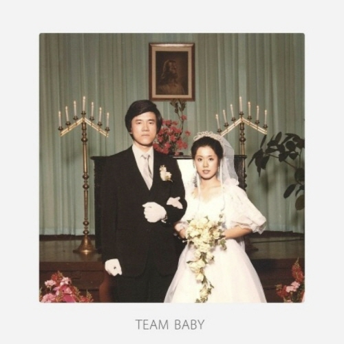

BLACK SKIRT
검정치마
프로필
- 본명 : 조홍철(조휴일)
- 출생 : 1982년 12월 5일 (39세), 대한민국
- 국적 : 미국
- 신체 : 180cm , AB형
- 가족 구성원 : 배우자, 아들
- 좋아하는 음식 : 햄버거
- 장르 : 인디, 락, 팝
- 데뷔 : 2008년 정규 1집 '201'
히스토리
2008년 11월 13일
정규 1집 '201' 발매, 최우수 모던 록 음반 수상
정규 1집 '201' 발매, 최우수 모던 록 음반 수상
2011년 7월 13일
정규 2집 'Don't You Worry Baby (I'm Only Swimming)' 발매
정규 2집 'Don't You Worry Baby (I'm Only Swimming)' 발매
2015년 4월 9일
싱글 'Hollywood' 발매
싱글 'Hollywood' 발매
2016년 1월 29일
싱글 선발매곡 'Everything' 발매
싱글 선발매곡 'Everything' 발매
2016년 3월 15일
싱글 선발매곡 '내 고향 서울엔' 발매
싱글 선발매곡 '내 고향 서울엔' 발매
2016년 6월 14
'기다린 만큼, 더' (드라마 "또! 오해영" OST) 발매
'기다린 만큼, 더' (드라마 "또! 오해영" OST) 발매
2017년 5월 30일
정규 3집 PART 1. 'TEAM BABY' 발매
정규 3집 PART 1. 'TEAM BABY' 발매
2019년 3월 3일
'어떤 날' (드라마 "로맨스는 별책부록" OST) 발매
'어떤 날' (드라마 "로맨스는 별책부록" OST) 발매
2019년 2월 12일
정규 3집 PART 2. 'THIRSTY' 발매
정규 3집 PART 2. 'THIRSTY' 발매
2021년 9월 24일
'Ling Ling' (드라마 "유미의 세포들" OST) 발매
'Ling Ling' (드라마 "유미의 세포들" OST) 발매
 2021년 4월 30일
2021년 4월 30일EP 'Good Luck To You, Girl Scout!' 발매
2022년 8월 4일
싱글 선발매곡 '어린양' 발매
싱글 선발매곡 '어린양' 발매
2022년 6월 1일
싱글 'DREAM LIKE ME' 발매
싱글 'DREAM LIKE ME' 발매
2008년
2011년
2015년
2016년
2017년
2019년
2021년
2022년